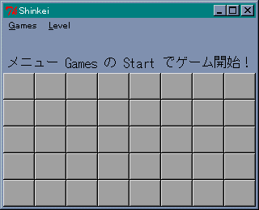
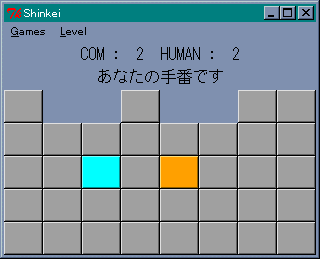
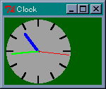
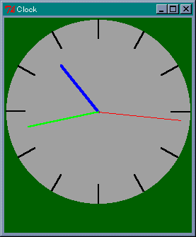

神経衰弱ゲーム
今回は簡単な例題として、ボタンウィジェットを使った神経衰弱ゲームを作ってみましょう。なお、このプログラムは拙作のページ Tcl/Tk お気楽 GUI プログラミング応用編 の 神経衰弱ゲーム を Perl/Tk で書き直したものです。内容は重複していますが、ご了承くださいませ。
ゲームは 10 色のボタンを 4 つずつ、合計 40 個のボタンを用意します。ひとりでプレイしても面白くないでしょうから、コンピュータを相手にボタンを取り合うことにします。
ここで問題になるのが、コンピュータ側のボタン選択処理です。色が判明したボタンを全て記憶しておくことは、コンピュータにとって朝飯前のことですが、私達に勝ち目が無くなってしまいます。かといって、ランダムでボタンを選ぶようでは、コンピュータが弱すぎるので面白くありません。そこで、コンピュータの記憶力を制限することにします。Level 1 では 4 個、Level 2 では 6 個、Level 3 では 8 個までとします。もし、Level 1 でも歯が立たないのであれば、個数をもっと少なくすればいいでしょう。逆に、Level 3 でも楽勝ならば、Level 4 や 5 を作ってみてください。
●ボタンの配置
ボタンは 5 行 8 列に並べ、その色を配列 @board に格納します。コンピュータ側は、色が判明したボタンの位置だけを記憶し、色は @board から求めることにします。
ボタンの配置は Grid マネージャを使った方が簡単です。スコア表示用のラベルは Pack マネージャで十分です。このような場合、配置するウィジェットをフレームに分けることで、異なるジオメトリマネージャを使うことができます。Grid マネージャだけで十分ではないかと思われるでしょうが、フレームを使う利点がもうひとつあるのです。
このゲームでは、取ったボタンを画面から取り除かないといけません。Perl/Tk では、destroy メソッドを使ってウィジェットを消去することができますが、それでは再ゲームのときにボタンを作り直さなければいけません。そこで、ボタンを画面から隠すことにします。このとき、フレームが役に立つのです。
上にあるウィンドウが下のウィンドウを覆い隠すように、ウィジェットにも重なり順があります。Tk の場合、あとから作成したウィジェットが上になります。フレームウィジェットを作っておいて、ボタンとの重なり順を調整することで、ボタンをフレームの下に隠したり、出したりすることができます。Perl/Tk ではメソッド raise と lower を使って、重なり順を簡単に変更することができます。
それではラベルとボタンから作りましょう。次のリストを見てください。
リスト : ラベルとボタンの配置
# メインウィンドウ
$top = MainWindow->new();
# フォントの設定
$top->optionAdd( '*font' => 'FixedSys 14' );
# ラベルの作成
$f0 = $top->Frame();
$f0->Label( -textvariable => \$buffer0 )->pack();
$f0->Label( -textvariable => \$buffer1 )->pack();
# ボタンの作成
$f1 = $top->Frame();
$i = 0;
for( $y = 0; $y < 5; $y++ ){
for( $x = 0; $x < 8; $x++ ){
$button[$i] = $top->Button( -text => ' ',
-command => [\&select_button_human, $i],
-activebackground => 'darkgray',
-bg => 'darkgray' );
$button[$i]->grid( -in => $f1, -column => $x, -row => $y );
$i++;
}
}
$f0->pack();
$f1->pack();
# イベントループ
MainLoop();
ラベルはフレーム $f0 に配置し、ボタンはフレーム $f1 に配置します。ボタンはメインウィンドウ $top から生成し、インスタンスを配列 @button に格納します。これらのボタンは、grid の -in オプションによりフレーム $f1 に配置されます。ボタンをフレームから生成すると、フレームとボタンの重なり順を変更できなくなります。ご注意くださいませ。
ボタンは格子状に配置されますが、0 から 39 までの番号で区別することができます。この番号が配列 @board の添字に対応します。ボタンを押したときに実行される関数が select_button_human です。バインドされるときは $i が変数展開されるので、押したボタンの番号が引数として渡されます。この番号を使って、ボタンの背景色を @board に格納されている色に変更します。あとは pack でフレーム $f0 と $f1 をウィンドウに詰め込みます。これでボタンとラベルが表示されます。
 ボタンとラベルの配置
●ボタンの選択処理
次は、コンピュータのボタン選択処理を作りましょう。色が判明したボタンの位置は配列 @memory にセットします。ボタンを選ぶときは、@memory の中から同じ色のボタンを一組選びます。見つからない場合は、しょうがないのでランダムでボタンを選びます。
記憶力の制限ですが、@memory を検索して空き場所があれば記憶し、無ければ記憶しないことにします。空いている場所を -1 で表すことにすると、制限値が 4 の場合は 0 から 3 までの間で -1 を探せばいいわけです。それから、ボタンを取ったら @memory から削除することをお忘れなく。
ボタンの選択処理は次のようになります。
リスト : ボタンの選択処理
sub select_button_com {
while( 1 ){
# 記憶の中でボタンを取れるか
my $result = &select_same_button();
if( @$result > 0 ){
&push_button( $result->[0] );
&push_button( $result->[1] );
} elsif( &select_button_random() == 0 ){
$turn = 0;
&print_message( 'あなたの手番です' );
return;
}
$count{'com'} += 2;
if( $count{'com'} + $count{'human'} == 40 ){
&game_over();
return;
}
&print_message('もう一回ですね');
}
}
グローバル変数 $turn は手番を管理するために使います。人間の手番が 0 で、コンピュータの手番が 1 です。%count は取ったボタンの個数をカウントするためのハッシュです。まず、select_same_button で @memory から同じ色のボタンを一組探します。見つかれば、push_button でボタンの色を表示して取り除きます。
同じ色のボタンが見つからない場合は、select_button_random を呼び出して、ランダムでボタンを決定します。実際には単純なランダムではなく、ボタンをひとつ選んだら、それと同じ色のボタンが @memory にないか検索します。ボタンが取れなかったら 0 を返すので、手番を相手に移します。ボタンを取ることができたら、$count{'com'} の値を増やします。ボタンが無くなったらゲーム終了です。
●ボタンの表示処理
ボタンを押したときの処理は push_button で行います。次のリストを見てください。
リスト : ボタンの選択
sub push_button {
my $i = shift;
my $result = 0;
$button[$i]->configure( -bg => $board[$i], -activebackground => $board[$i] );
$top->update();
$top->after( 500 );
if( $number >= 0 ){
if( $board[$number] eq $board[$i] ){
# ボタンを取る
&get_button( $i, $number );
$result = 2;
} else {
# 記憶する
&write_memory( $i );
&write_memory( $number );
}
# 表示をクリアする
$button[$i]->configure( -bg => 'darkgray', -activebackground => 'darkgray' );
$button[$number]->configure( -bg => 'darkgray', -activebackground => 'darkgray' );
$number = -1;
} else {
$number = $i;
$result = 1;
}
$result;
}
ボタンを押したあと、しばらく色を表示させるため 500 msec 待ちます。時間待ちには after メソッドを使います。ところが実際に試してみると、ボタンがへこんだまま 500 msec が経過し、色の表示が一瞬で終わってしまうのです。これは、マウスの左ボタンを押したときに push_button が実行されるため、マウスの左ボタンを離したときの処理が実行されないまま 500 msec 経過してしまうからです。
これを回避するために update メソッドを使います。このメソッドは、全ての待ちイベントを受け付け、実行すべきプログラムを処理します。これによって、マウスの左ボタンを離したときの処理が実行され、ボタンが元に戻るので色がきちんと表示されます。
押したボタンの番号はグローバル変数 $number に格納します。まだボタンを押していない場合、$number の値は -1 です。$number が 0 以上であれば、すでにボタンを 1 回押していることがわかります。引数 $i と $number のボタンの色を比較し、同じ色であればボタンを取り除きます。これは get_button で行います。この中で @memory からボタンを削除しています。違う色であれば、その位置を @memory に記憶してボタンの表示を元に戻します。
あとのプログラムは簡単なので、説明は割愛いたします。詳細は プログラムリスト をお読みくださいませ。
 失敗！
●プログラムリスト
#
# shinkei.pl : 対戦版神経衰弱ゲーム
#
# Perl/Tk サンプルプログラム
#
# Copyright (C) 2004 Makoto Hiroi
#
# グローバル変数
# @board : 色を格納するテーブル（１次元配列）
# $number : 押したボタンの番号（無ければ -1）
# @memory : 色と番号を覚える配列
# $level : レベル（記憶容量）
# $action : 先手・後手
# %count : com コンピュータ側が取った枚数
# : hyman 人間側が取った枚数
# $turn : 0: 人間側の手番, 1: コンピュータ側の手番
use Tk;
# グローバル変数の初期化
$action = 0;
$turn = 2;
$level = 4;
$buffer1 = 'メニュー Games の Start でゲーム開始！';
# 色のリスト
@color_list = ('white', 'green', 'orange', 'red', 'cyan',
'yellow', 'blue', 'purple', 'black', 'pink');
# メッセージの表示
sub print_message {
my $mes = shift;
$buffer0 = sprintf( "COM : %2d HUMAN : %2d", $count{'com'}, $count{'human'} );
$buffer1 = $mes;
$top->update();
$top->after( 500 );
}
# 初期化
sub start_game {
my ($i, $j, $c);
$i = 0;
foreach $c (@color_list) {
for( $j = 0; $j < 4; $j++ ){
$board[$i++] = $c;
}
}
# シャッフル
for( $i = 0; $i < 40; $i++ ){
$j = int( rand( 40 ) );
$c = $board[$j];
$board[$j] = $board[$i];
$board[$i] = $c;
}
# グローバル変数の初期化
@memory = (-1,-1,-1,-1,-1,-1,-1,-1);
$number = -1;
$count{'com'} = 0;
$count{'human'} = 0;
# ボタンを見せる
$f1->lower();
if( $action == 0 ){
$turn = 0;
&print_message('あなたの手番です');
} else {
$turn = 1;
&print_message('私の手番です');
&select_button_com();
}
}
# ボタンを取る
sub get_button {
my ($n1, $n2) = @_;
$button[$n1]->lower();
$button[$n2]->lower();
$board[$n1] = 'none';
$board[$n2] = 'none';
&delete_memory( $n1 );
&delete_memory( $n2 );
}
# ボタンを押した
# 0 : 失敗, 1 : 最初の選択, 2 : 成功
sub push_button {
my $i = shift;
my $result = 0;
$button[$i]->configure( -bg => $board[$i], -activebackground => $board[$i] );
$top->update();
$top->after( 500 );
if( $number >= 0 ){
if( $board[$number] eq $board[$i] ){
# ボタンを取る
&get_button( $i, $number );
$result = 2;
} else {
# 記憶する
&write_memory( $i );
&write_memory( $number );
}
# 表示をクリアする
$button[$i]->configure( -bg => 'darkgray', -activebackground => 'darkgray' );
$button[$number]->configure( -bg => 'darkgray', -activebackground => 'darkgray' );
$number = -1;
} else {
$number = $i;
$result = 1;
}
$result;
}
# 場所を探す
sub search_memory {
my $n = shift;
my $i;
for( $i = 0; $i < $level; $i++ ){
return $i if $memory[$i] == $n;
}
return -1;
}
# 場所を記憶する
sub write_memory {
my $n = shift;
# チェック
if( &search_memory( $n ) == -1 ){
# 記憶する
my $i = &search_memory( -1 );
$memory[$i] = $n if $i >= 0;
}
}
# 削除する
sub delete_memory {
my $n = shift;
my $i = &search_memory( $n );
$memory[$i] = -1 if $i >= 0;
}
# 同じ色のボタンを探す
sub find_same_button {
my $c = shift;
my $i;
for( $i = 0; $i < $level; $i++ ){
my $j = $memory[$i];
return $j if $board[$j] eq $c;
}
return -1;
}
# 同種のボタンを一組選ぶ
sub select_same_button {
my $i;
my %postion;
foreach $c (@color_list) {
$postion{$c} = -1;
}
for( $i = 0; $i < $level; $i++ ){
my $j = $memory[$i];
if( $j != -1 ){
my $c = $board[$j];
if( $postion{$c} == -1 ){
$postion{$c} = $j;
} else {
return [$postion{$c}, $j];
}
}
}
return [];
}
# 乱数でボタンを決めるよ
sub select_random {
my $n = shift;
my @buff = ();
# 取られていないボタンを集める
my $i;
for( $i = 0; $i < 40; $i++ ){
if( ($i != $n) and
($board[$i] ne 'none') and
(&search_memory( $i ) == -1) ){
push( @buff, $i );
}
}
# 乱数で選択
return $buff[ int( rand( @buff ) ) ];
}
# 終了メッセージ
sub game_over {
my $mes;
if( $count{'com'} > $count{'human'} ){
$mes = 'わたしの勝ちです';
} elsif( $count{'com'} < $count{'human'} ){
$mes = 'あなたの勝ちです';
} else {
$mes = '引き分けです';
}
&print_message( $mes );
}
# ランダムでボタンを選択する
sub select_button_random {
my ($n1, $n2);
# ランダムでボタンをひとつ選ぶ
$n1 = &select_random( -1 );
# 記憶の中に同じ色のボタンがあるか
$n2 = &find_same_button( $board[$n1] );
if( $n2 == -1 ){
# ランダムで選ぶ
$n2 = &select_random( $n1 );
}
&push_button( $n1 );
&push_button( $n2 );
}
# COM の手番
# level によって記憶するカードの枚数を制限する
sub select_button_com {
while( 1 ){
# 記憶の中でボタンを取れるか
my $result = &select_same_button();
if( @$result > 0 ){
&push_button( $result->[0] );
&push_button( $result->[1] );
} elsif( &select_button_random() == 0 ){
$turn = 0;
&print_message( 'あなたの手番です' );
return;
}
$count{'com'} += 2;
if( $count{'com'} + $count{'human'} == 40 ){
&game_over();
return;
}
&print_message('もう一回ですね');
}
}
# 人間側
sub select_button_human {
my $i = shift;
my $result;
return if $turn != 0 or $number == $i;
$result = &push_button( $i );
if( $result == 0 ){
$turn = 1;
&print_message('わたしの手番です');
$top->after( 500 );
&select_button_com();
} elsif( $result == 2 ){
$count{'human'} += 2;
if( $count{'com'} + $count{'human'} == 40 ){
&game_over();
return;
}
$turn = 0;
&print_message('あなたの手番です');
}
}
# メインウィンドウ
$top = MainWindow->new();
# ********** メニューの設定 **********
$top->optionAdd( '*font' => 'FixedSys 14' );
$m = $top->Menu( -type => 'menubar' );
$top->configure( -menu => $m );
$m1 = $m->cascade(-label => 'Games', -under => 0, -tearoff => 0);
$m2 = $m->cascade(-label => 'Level', -under => 0, -tearoff => 0);
$m1->command(-label => 'Start', -under => 0, -command => \&start_game );
$m1->separator;
$m1->radiobutton(-label => '先手', -variable => \$action, -value => 0);
$m1->radiobutton(-label => '後手', -variable => \$action, -value => 1);
$m1->separator;
$m1->command(-label => 'exit', -under => 0, -command => \&exit );
$m2->radiobutton(-label => 'Level 1', -variable => \$level, -value => 4);
$m2->radiobutton(-label => 'Level 2', -variable => \$level, -value => 6);
$m2->radiobutton(-label => 'Level 3', -variable => \$level, -value => 8);
# ラベルの作成
$f0 = $top->Frame();
$f0->Label( -textvariable => \$buffer0 )->pack();
$f0->Label( -textvariable => \$buffer1 )->pack();
# ボタンの作成
$f1 = $top->Frame();
$i = 0;
for( $y = 0; $y < 5; $y++ ){
for( $x = 0; $x < 8; $x++ ){
$button[$i] = $top->Button( -text => ' ',
-command => [\&select_button_human, $i],
-activebackground => 'darkgray',
-bg => 'darkgray' );
$button[$i]->grid( -in => $f1, -column => $x, -row => $y );
$i++;
}
}
$f0->pack();
$f1->pack();
# イベントループ
MainLoop();
アナログ時計
今回はキャンバスウィジェットの簡単な例題として、リサイズ可能なアナログ時計を作ってみましょう。なお、このプログラムは拙作のページ Tcl/Tk お気楽 GUI プログラミング応用編 の アナログ時計 を Perl/Tk で書き直したものです。内容は重複していますが、ご了承くださいませ。
時計をウィンドウいっぱいに広げるのは面倒なので、幅と高さのどちらか短い方に合わせて時計を描画することにします。キャンバスウィジェットに長針、短針、秒針を描き、after コマンドを使って１秒ごとに針の位置を動かします。短針は動きを滑らかにするために、１分ごとに位置を動かします。したがって、短針を動かす角度は 360 / (12 * 60) = 0.5 度になります。
●画面の設定
最初に画面を設定します。ウィンドウが小さくなると時計がよく見えないので、ウィンドウの大きさを制限します。これはメソッド minsize と maxsize で設定することができます。幅と高さはピクセル単位で指定します。次のリストを見てください。
リスト : 画面の設定
# メインウィンドウ
$top = MainWindow->new();
$top->minsize( 100, 100 );
$top->maxsize( 400, 400 );
# キャンバス
$c0 = $top->Canvas( -width => 140, -height => 140, -bg => 'darkgreen' );
$c0->pack( -expand => 1, -fill => 'both' );
# 図形の生成
$circle = $c0->create('oval', 5, 5, 135, 135, -fill => 'darkgray', -outline => 'darkgray' );
for( $i = 0; $i < 12; $i++ ){
$backboard[$i] = $c0->create('line', $i, $i, 135, 135, -width => 2.0 );
}
$hour = $c0->create('line', 70, 70, 70, 30, -fill => 'blue', -width => 3.0 );
$min = $c0->create('line', 70, 70, 70, 20, -fill => 'green', -width => 2.0 );
$sec = $c0->create('line', 70, 70, 70, 15, -fill => 'red' );
ウィンドウの大きさは、幅と高さを 100 から 400 ピクセルの範囲に制限します。背景の円と目盛を表す図形は、変数 $circle と配列 @backboard に格納します。針を表す図形は変数 $hour, $min, $sec に格納します。ここは図形を生成するだけなので、位置はでたらめでもかまいません。
●ウィンドウの再描画
さて、問題はウィンドウがリサイズされた場合です。ここで発生するイベントが Configure です。このイベントをバインドして、ウィンドウの大きさが変わったら時計を再描画すればいいわけです。バインドはメインウィンドウに対して設定すれば大丈夫です。
$top->bind( "<Configure>", \&change_size );
キャンバスウィジェットは -fill と -expand を設定して pack されているので、ウィンドウの大きさが変わると、キャンバスの大きさも変わります。詳しい説明は ウィンドウのリサイズ をお読みくださいませ。このときに Configure イベントを受け取るので、時計の大きさを変える関数 change_size を実行します。
キャンバスウィジェットの大きさですが、これは cget メソッドでは求めることができません。実際、ウィンドウがリサイズされキャンバスウィジェットが引き伸ばされても、最初に設定されたオプションの値そのままになっています。キャンバスウィジェットの大きさを求めるには、ウィジェットの情報を取得するメソッド width と height を使います。change_size は次のようになります。
リスト : 大きさの変更
sub change_size {
my $w = $c0->width;
my $h = $c0->height;
$width = ($w < $h ? $w : $h);
&draw_backboard();
&draw_hand();
}
$width は時計の大きさを表すグローバル変数で、キャンバスと同じ大きさに初期化しておきます。キャンバスの幅と高さを求め、小さい方を $width にセットします。図形の配置は背景を draw_backboard で、針を draw_hour で行います。これらの関数は $width にセットされた大きさに合わせて時計を描画します。描画は coords メソッドで図形を移動させるだけです。針を動かす関数 draw_hand は次のようになります。
リスト : 針の描画
sub draw_hand {
my ($s, $m, $h) = localtime( time );
my $r = $width / 2;
my $rs = $r * 7 / 8;
my $rm = $r * 6 / 8;
my $rh = $r * 5 / 8;
my ($x, $y, $n);
# 秒
$n = $s * 12;
$x = $r + $rs * $sin_table[$n];
$y = $r - $rs * $cos_table[$n];
$c0->coords( $sec, $r, $r, $x, $y );
# 分
$n = $m * 12;
$x = $r + $rm * $sin_table[$n];
$y = $r - $rm * $cos_table[$n];
$c0->coords( $min, $r, $r, $x, $y );
# 時
$n = ($h < 12 ? $h : $h - 12) * 60 + $m;
$x = $r + $rh * $sin_table[$n];
$y = $r - $rh * $cos_table[$n];
$c0->coords( $hour, $r, $r, $x, $y );
}
まず time で現在時刻を求め、localtime で時、分、秒に分解します。時計の半径を $r に、秒針、長針、短針の長さを $rs, $rm, $rh にセットします。あとは、あらかじめ計算しておいた三角関数表 sin_table と cos_table を使って座標を計算し、メソッド coords で針を移動させます。背景を描画する draw_backboard も簡単です。説明は割愛いたしますので、詳細は プログラムリスト をお読みくださいませ。
●時計を動かす
あとは after メソッドを使って、１秒ずつ針を動かします。
# 表示
sub show_time {
&draw_hand();
$top->after( 1000, \&show_time );
}
# 最初の起動
&show_time();
show_time は draw_hand を呼び出して針を描画し、1 秒後に show_time を呼び出すよう after メソッドで設定します。最後に show_time を実行すれば、1 秒ごとに短針が動き、時計が動作します。
 デフォルトサイズのアナログ時計
デフォルトサイズのアナログ時計
 ウィンドウを縮小
 ウィンドウを拡大
これで、リサイズ可能なアナログ時計を作ることができました。ただ、縦長や横長にしても、ウィンドウ全体に時計が拡大されるわけではないので、やや物足りないかもしれません。興味のある方は時計を楕円にするなど、プログラムの改造に挑戦してください。
●プログラムリスト
#
# clock.pl : アナログ時計
#
# Perl/Tk サンプルプログラム
#
# Copyright (C) 2004 Makoto Hiroi
#
use Tk;
# グローバル変数
$width = 140;
# データの初期化
sub init_data {
foreach $i (0 .. 719) {
my $rad = 3.14 / 360 * $i;
$sin_table[$i] = sin( $rad );
$cos_table[$i] = cos( $rad );
}
}
# 背景の描画
sub draw_backboard {
my $i;
my $r = $width / 2;
# 円
$c0->coords( $circle, 5, 5, $width - 5, $width - 5 );
# 目盛
for( $i = 0; $i < 12; $i++ ){
my $n = $i * 60;
my $x1 = $r + ($r - 5) * $sin_table[$n];
my $y1 = $r + ($r - 5) * $cos_table[$n];
my $x2 = $r + ($r - 5) * 4 / 5 * $sin_table[$n];
my $y2 = $r + ($r - 5) * 4 / 5 * $cos_table[$n];
$c0->coords( $backboard[$i], $x1, $y1, $x2, $y2 );
}
}
# 針を描く
sub draw_hand {
my ($s, $m, $h) = localtime( time );
my $r = $width / 2;
my $rs = $r * 7 / 8;
my $rm = $r * 6 / 8;
my $rh = $r * 5 / 8;
my ($x, $y, $n);
# 秒
$n = $s * 12;
$x = $r + $rs * $sin_table[$n];
$y = $r - $rs * $cos_table[$n];
$c0->coords( $sec, $r, $r, $x, $y );
# 分
$n = $m * 12;
$x = $r + $rm * $sin_table[$n];
$y = $r - $rm * $cos_table[$n];
$c0->coords( $min, $r, $r, $x, $y );
# 時
$n = ($h < 12 ? $h : $h - 12) * 60 + $m;
$x = $r + $rh * $sin_table[$n];
$y = $r - $rh * $cos_table[$n];
$c0->coords( $hour, $r, $r, $x, $y );
}
# 大きさの変更
sub change_size {
my $w = $c0->width;
my $h = $c0->height;
$width = ($w < $h ? $w : $h);
&draw_backboard();
&draw_hand();
}
# 表示
sub show_time {
&draw_hand();
$top->after( 1000, \&show_time );
}
# メインウィンドウ
$top = MainWindow->new();
$top->minsize( 100, 100 );
$top->maxsize( 400, 400 );
# キャンバス
$c0 = $top->Canvas( -width => 140, -height => 140, -bg => 'darkgreen' );
$c0->pack( -expand => 1, -fill => 'both' );
$top->bind( "<Configure>", \&change_size );
# 図形の生成
$circle = $c0->create('oval', 5, 5, 135, 135, -fill => 'darkgray', -outline => 'darkgray' );
for( $i = 0; $i < 12; $i++ ){
$backboard[$i] = $c0->create('line', $i, $i, 135, 135, -width => 2.0 );
}
$hour = $c0->create('line', 70, 70, 70, 30, -fill => 'blue', -width => 3.0 );
$min = $c0->create('line', 70, 70, 70, 20, -fill => 'green', -width => 2.0 );
$sec = $c0->create('line', 70, 70, 70, 15, -fill => 'red' );
# データの初期化
&init_data();
# 最初の起動
&draw_backboard();
&show_time();
# メインループ
MainLoop();